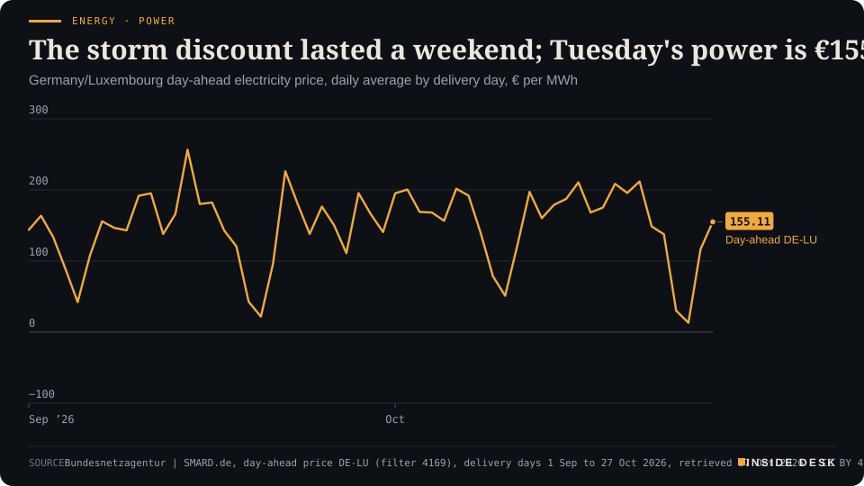
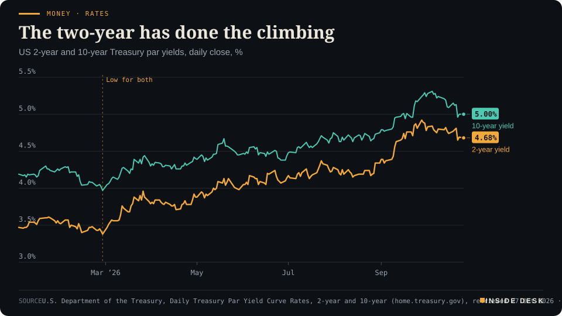
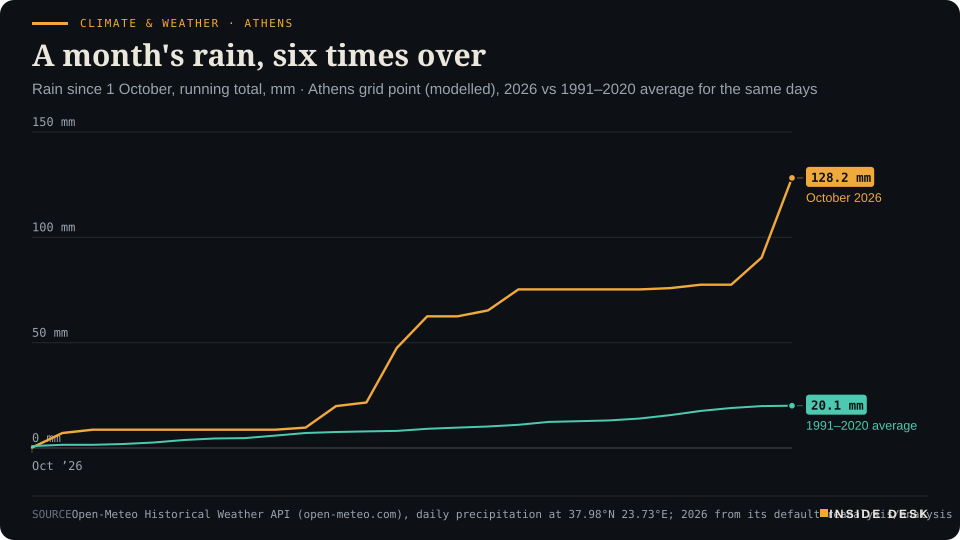

Inside Desk ePaper, Morning ePaper · Tue 27 Oct 2026
Tuesday, 27 October 2026Always free
Inside Desk
Morning ePaperAvailable 06:30 CET · Berlin
Lead · Politics & Institutions
Israelis elect the 26th Knesset today, the first national vote since 7 October 2023. Every final poll left both blocs short of 61 seats. The 3.25% threshold, Arab turnout and a few small lists will decide what the arithmetic allows.
Israel votes today with no bloc near a majority, and in Brazil the loser's own party accepted the count. Seoul bought on its growth print, the US two-year sits at 4.68% before Wednesday's Fed, and German power is back at €155 once the storm moved on. Eleven desks, every number sourced.
Israel votes today with no bloc near a majority, Bolsonaro's own party accepted the Brazilian count, and a US court left 20,000 ballots in the pile: on three continents, the counting held.
Geo-economics · p. 5
Markets & Macro · p. 6
Energy & Industry · p. 9
Climate & Weather · p. 16
The day in one sentenceIsrael votes today with no bloc near a majority, Bolsonaro's own party accepted the Brazilian count, and a US court left 20,000 ballots in the pile: on three continents, the counting held.
ContentsInside Desk · Morning ePaper27 October 2026
Israel votes today with no bloc near a majority, and in Brazil the loser's own party accepted the count. Seoul bought on its growth print, the US two-year sits at 4.68% before Wednesday's Fed, and German power is back at €155 once the storm moved on. Eleven desks, every number sourced.
11 edition pieces · 11 desks · Available 06:30 CET, 27 October 2026
21 ePaper extras, added , 27 October. They appear only in the ePaper and carry their own time.
The website edition follows at 08:30.
The ePaper rhythm
06:30 Morning ePaper (website edition at 08:30)
17:30 Evening ePaper, updated live until 22:30 with an “Updated” time and a Latest page
Sun 10:00 The Sunday Magazine
Berlin time. Every issue is free.
How to read it
Swipe, use the arrow keys or the page strip. Tap any headline for the reading view. Press / to search, t for contents, +/− to zoom. Download the PDF.
LeadInside Desk · Morning ePaper27 October 2026
Politics & Institutions · Lead · 3 min
Israelis elect the 26th Knesset today, the first national vote since 7 October 2023. Every final poll left both blocs short of 61 seats. The 3.25% threshold, Arab turnout and a few small lists will decide what the arithmetic allows.
Israelis vote today in the election of the 26th Knesset, the first national vote since the Hamas-led attacks of 7 October 2023 and the wars that followed3. The Independent counts about half a million first-time voters3. Benjamin Netanyahu, 77, goes into it with 19 accumulated years as prime minister since 19963. His main challenger is Gadi Eisenkot, a former military chief, whose Yashar party led every one of the last four broadcaster polls1.
You will hear a great deal today about who “wins”. Keep one number in your head instead: 61. That is the majority of the 120-seat Knesset a government needs, and on the final polls nobody reaches it1,2.
What the last polls said. Israeli law bans new polls from the Friday before election day until voting closes4, so the last published pictures date from Friday. Averaged across Channel 12, Channel 13, Channel 14 and Maariv, the opposition “change bloc” stood at 54 seats and Netanyahu’s bloc at 49.5, with the Arab parties at 14.5 combined1. Channel 12 had the blocs at 56 and 50; Channel 13 at 54 and 50; the public broadcaster Kan at 52 and 502. At party level, Yashar averaged 22 seats, Likud 19.75 and Naftali Bennett’s B’Yachad 14.51.
The threshold does the real work. A party needs 3.25% of the national vote to enter the Knesset at all; votes for lists that fall short are, in effect, set aside5. The joint Reservists–Economic list of Yoaz Hendel and Yaron Zelekha averaged 3.10% across the four polls, 0.15 points under the line, and crossed it in two of them with four seats each time1. Ofer Winter’s People of Israel averaged 2.88% and failed in all four1. Desk arithmetic: even the change bloc’s best final poll, 56 seats, is five short of 61, so a four-seat list that lands just above or just below 3.25% is worth almost the whole gap.
The wildcard is turnout. About 1.2 million Palestinian citizens of Israel are eligible to vote3. The Independent reports polls suggesting Arab turnout near 60%, with organisers aiming for 70%, which could lift the Joint List and Ra’am to a combined 15 seats3. Higher turnout also raises the number of votes needed to clear the threshold, which squeezes the fringe on both sides3. Both main Jewish-led camps have publicly ruled out governing with the Arab lists3. Ra’am’s Mansour Abbas has said he is open to the change bloc; several parties in it have said no2.
LeadInside Desk · Morning ePaper27 October 2026
The noise of the last weekend. On Sunday Netanyahu said Donald Trump was ready to act to “finally, finally, remove the Iranian threat”, as long as he himself stayed in office3. Asked about it, the White House said the United States “will not be attacking Iran at any time prior to the midterm elections”3. Campaign speeches end tonight. The Knesset’s arithmetic does not.
What is actually on the ballot. Supporters of the prime minister point to his security experience; critics want accountability for the failures before 7 October5. Military-service exemptions for ultra-Orthodox men and the cost of living have also shaped the campaign5. On Palestinian statehood, there is less of a choice than the noise suggests: Netanyahu, Eisenkot and the leaders of nearly all Jewish-led parties oppose an independent Palestinian state3. Netanyahu also faces a long-running corruption trial, which he calls a witch hunt, and an International Criminal Court arrest warrant3.
The dull machinery. The army has set up more than 850 military polling stations, about a quarter of them mobile, including units in the West Bank, southern Lebanon, south-western Syria and Gaza, staffed by around 3,000 soldiers3. Soldiers’ ballots go in double envelopes, which is why the final count always takes longer than the exit poll3. Exit polls come at 22:00 Israel time, 21:00 CET2,3. After that come the certified results, then the president’s consultations, then weeks of bargaining.
So treat tonight’s exit polls as a weather report, not a verdict. A deadlocked parliament is not a broken state: it is a state where the voters have not handed anyone a blank cheque. The interesting work, and the honest test of every promise made this month, begins tomorrow morning, in rooms with no cameras.
Geo-economicsInside Desk · Morning ePaper27 October 2026
Geo-economics · 2 min
While the diplomats talked in Tehran, the shipping desks kept counting. About 492 vessels wait outside Hormuz, assisted transits run at about a quarter of normal, and one attack reached the public record three days after it happened.
The UK Maritime Trade Operations centre, UKMTO, said it had received a “verified, time-late report” of a tanker struck by an unknown projectile while sailing outbound through the Strait of Hormuz on 23 October at 08:39 UTC1. The ship was disabled; the crew are safe1. The report surfaced three days after the event. On Monday UKMTO also passed on third-party reports of a vessel on fire about 63 nautical miles southeast of Al-Faw, Iraq, in the northern Gulf, classed as suspicious activity rather than a confirmed attack1,3.
The queue. The Joint Maritime Information Center estimated on 25 October that about 492 vessels were waiting outside the strait: about 194 near Fujairah and Khor Fakkan, 178 off Dubai, 55 near Musandam and Sohar and 32 off Bandar Abbas and Qeshm2. It said the backlog was expected to persist2. The centre keeps its threat level for Hormuz at “severe”, with further deliberate attacks “highly likely”, and counts 156 confirmed maritime security incidents in the region since 1 March1.
The traffic. JMIC recorded 101 US-facilitated transits between 22 and 24 October, against a 2025 average of about 138 vessels a day; the two figures are measured differently1. Desk arithmetic: about 34 assisted transits a day, roughly a quarter of the old daily average. Outside the US-assisted system, tracking showed single-digit daily transits1.
The machinery. Navigation interference is part of the picture: Windward counted 293 vessels affected by jamming in the Gulf and the Gulf of Oman on 21 October, and UKMTO’s weekly overview logged 18,049 anomalous position reports2. JMIC also warns that ships sitting still at anchor with their transponders on face higher targeting risk2.
None of this cancels Monday’s talks in Tehran; it tells you what they are up against. Insurers, charterers and port agents will believe a ceasefire when the anchorage count falls, and that is a fair test. A queue of 492 ships is also a queue of crews, cargoes and invoices waiting to move the day the lane is safe.
Geo-economics · Short item · ePaper extra, added
Iran's foreign ministry says Washington confuses diplomacy with demands, and that nothing new has come from Europe beyond a statement. Then the president flew to Moscow.
“The American side is not serious about negotiations,” Iran’s foreign ministry spokesman, Esmaeil Baqaei, said at his weekly news conference on Monday, as cited by IRNA1. He accused Washington of confusing diplomacy with imposing demands1.
On Europe he was blunter about the paperwork. Tehran, he said, had received no new European proposal for negotiations beyond a political statement, and he criticised Britain, France and Germany for following Washington on the restoration of UN sanctions1. He repeated that Iran has never sought nuclear weapons1. He also confirmed that a Qatari delegation had recently visited Tehran, describing such visits as normal during regional conflicts1.
Then the calendar moved on. President Masoud Pezeshkian arrived in Russia for the gas exporters’ summit, and Foreign Minister Abbas Araghchi has said he will meet Vladimir Putin this week2.
Desk observation: “not serious” is the language of a party that still wants a table, not one that has left it. The same spokesman confirmed the Qatari visit in the same briefing1. The useful document, when it comes, will be a dull one: who lifts what, who lets which ship through, and who checks. Until then, read the schedules of mediators rather than the adjectives of spokesmen.
Markets & MacroInside Desk · Morning ePaper27 October 2026
Markets & Macro · 2 min
Korea's economy grew 1.0% in the third quarter, more than three times the central bank's August forecast. The Kospi rose about 4%. Brent slipped below $115 and the US ten-year sat just under 5%.
Asia opened Tuesday on Monday’s New York mood. The S&P 500 had closed 0.7% higher, the Nasdaq 100 1.1%, and the Philadelphia Semiconductor Index 2.8%, its sharpest daily gain since 21 September4. By early trading South Korea’s Kospi was up more than 4% and Japan’s Nikkei about 1.9%1. MSCI’s broadest index of Asia-Pacific shares outside Japan rose 1.2%1.
The headlines credit Anthropic’s prospectus and Meta’s $95 billion share sale1. The more useful number came from the Bank of Korea at breakfast: real GDP grew 1.0% in the third quarter, 3.4% on the year2. In August the bank had forecast 0.3%3. Exports rose 2.3%, led by semiconductors, and investment in equipment, including chip-making machinery, rose 4.1%3. Desk arithmetic: the outcome was more than three times the bank’s own forecast.
Read the small print too. Private consumption fell 0.2%; the government added more to growth than households did3. Korea is growing on chips and state spending, not on shoppers. That is a sturdy invoice, but a narrow one.
Elsewhere the board was quiet. Brent crude eased 0.7% to $114.95 a barrel as mediators worked on the Iran war1. The US ten-year Treasury yield was steady at 4.992%1. The yen sat at 157.72 per dollar ahead of Friday’s Bank of Japan decision, and gold at $4,013.70 an ounce1. European futures dipped 0.23%1.
You will hear a great deal this week about what AI might earn. On Tuesday a central bank published what one chip economy actually produced. Hold on to the second kind of number. Nothing here is investment advice.
Markets & Macro · Short item · ePaper extra, added
Korea's national accounts show a gap between what the country made and what it earned. The difference is a matter of prices.
There are two lines at the top of the Bank of Korea’s release on Tuesday, and the second one is the more remarkable. Real GDP, the volume of what Korea produced, rose 1.0% in the third quarter. Real gross domestic income, what that production could buy, rose 3.4% on the quarter and 18.8% on the year1.
According to The Asia Business Daily, that annual income gain is the highest since the fourth quarter of 1977, and income has grown at double-digit annual rates for three quarters in a row2. Manufacturing output rose 2.0%, led by computers, electronic and optical equipment; services grew only 0.2%, down from 1.0% in the second quarter2.
What the gap means. Income runs ahead of output when a country’s exports buy more of the world’s goods than before. In an economy whose exports are led by semiconductors2, the obvious suspect is chip prices: the same factories, the same volume, a better price per wafer. It is good news, and it is also borrowed from a cycle: prices that rise can fall without a single machine stopping.
The household line. Private consumption fell 0.2%, with fewer cars and home appliances bought2. The national income is up sharply; the shopping trolley is not. Somewhere between the two sits the question of who receives the chip windfall: shareholders, the tax office, or wages.
The Kospi rose about 4% on the morning. Markets priced the income line. Nothing here is investment advice.
Markets & Macro · Brief · ePaper extra, added
Brent crude futures eased 0.7% to $114.95 a barrel in Asian trade on Tuesday, drifting away from a six-month high as investors weighed the chance of a resolution to the US-Israeli war with Iran, Reuters reported1. Gold eased a touch to $4,013.70 an ounce1.
Nick Twidale of ATFX Global said supply remains the key concern, and that any development threatening physical exports could see Brent retest its recent highs and potentially push back towards $1201. That is the honest shape of this market: the price falls on talks and rises on tankers. Watch the tankers. Nothing here is investment advice.
Politics & InstitutionsInside Desk · Morning ePaper27 October 2026
Politics & Institutions · Short item · ePaper extra, added
Flávio Bolsonaro's Liberal Party recognised Lula's win on Monday while still asking for 'clarification'. Donald Trump called the vote 'rigged'; Brazil's vice-president called that 'unfounded'.
Two days after Brazil’s runoff, the loudest objection has lost its own party. Valdemar Costa Neto, leader of the Liberal Party, said on Monday: “We recognise the presidential election results”, adding that “the issues raised need to be properly clarified”1. Flávio Bolsonaro himself has not formally conceded and on Sunday promised to seek annulment1.
The numbers he would have to overturn are not close. Lula won more than 64.25 million votes against 59.83 million1. The two-hour extension that Bolsonaro blames produced about 35,000 extra votes, under 0.03% of the total, according to an analysis by Pedro Burgos of Insper1. Desk arithmetic: that is less than 1% of Lula’s 4.4 million margin.
Folha de S.Paulo reported that legal advisers and allies have persuaded Bolsonaro to drop the annulment bid1. He said federal police had asked for his passports, that he would comply, and that he plans “to organise the opposition”1.
From Washington, Donald Trump told reporters it “looked like another rigged election”, offered no evidence, and said he “did not take sides”1. Vice-President Geraldo Alckmin called the remarks “totally wrong” and “unfounded”2.
An opposition that organises instead of annulling is not a defeat for anyone. It is the job description.
The 9th US Circuit Court of Appeals on Monday denied the administration’s request to sequester roughly 20,000 mailed ballots it says went to “likely” non-citizens; it has not said publicly how it built that list1. The majority said lower courts had not been given enough time, and Judge Gabriel Sanchez wrote that the request asked a federal court “to dictate to a state legislature a matter squarely within the state’s traditional domain”1. A lower-court hearing is scheduled for Tuesday; the midterms are on 3 November1. The Justice Department has sued 30 states and Washington, DC, for full voter-roll access and has lost 26 of those cases so far1. Elections are run by clerks with lists and deadlines. Courts keep sending the question back to them.
Psychology & BehaviourInside Desk · Morning ePaper27 October 2026
Psychology & Behaviour · 2 min
One in three young adults in a Rutgers survey asks AI about drugs and alcohol; nearly half of US AI users have treated it like a friend. Trust is running ahead of evidence.
A survey of nearly 1,000 people aged 18 to 29, published by Rutgers Health researchers in JMIR Formative Research, found that one in three use generative AI such as ChatGPT for information about drugs and alcohol, mostly about risks and consequences1. About half of those do so at least monthly, and they rated the tools highly for trust, reliability and helpfulness1. Black and male respondents were more likely to use AI this way, which the lead author said could reflect “differences in healthcare access, stigma, trust”1.
The wider picture comes from the American Psychological Association’s annual stress survey of 3,132 US adults, run by Harris Poll from late July to late August2. Adults who have ever used AI rose from 62% in 2025 to 70% in 20262. Among users, 49% had talked to it as a friend and 47% had used it in a role similar to a mental health professional, for example to check a therapist’s suggestion2. One in ten said they rely on AI more than on friends and family for advice2.
The reading. Last night this desk read the same APA survey as a ledger of money worries. Read it again as a ledger of where people go with them. Therapist-style use falls steeply with age: 26% of users aged 18 to 29 do it regularly or often, against 3% of those aged 62 to 802. Users report more good experiences than bad, 51% to 29%, but 12% worry about dependence and 9% say it left them feeling more disconnected2.
Neither study can say whether the chatbot eases loneliness or replaces the harder phone call2. That is the honest answer. The constructive one: a question asked of a machine is still a question asked. Public-health services, pharmacies and doctors’ practices can meet it with clear, findable answers. The machine borrows its knowledge from somewhere; make sure that somewhere is good.
Psychology & Behaviour · Short item · ePaper extra, added
A study of people with depressive symptoms finds that a questionnaire score rarely sends anyone to a professional. Their own sense of need does.
Health systems decide who “needs” care by scores and guidelines. People decide by something else. A mixed-methods study in BMC Health Services Research followed 456 people whose depression questionnaire (PHQ-9) score was at least 5, meaning at least mild symptoms, with telephone interviews at the start and 12 months later1. Those who did not perceive a need for help were highly unlikely to seek professional care1.
The researchers then interviewed 23 participants chosen to explain the patterns, and found that “subjective need” is not a yes-or-no switch. They describe six types of it, shaped by barriers, earlier treatment experiences, social support and coping strategies1. The study does not test a new care pathway, and its findings are limited to the people studied1.
The authors suggest looking at subjective and guideline-defined need side by side, rather than treating the guideline as the only measure1. The lesson is modest and useful. …
A survey of 791 UK adults aged 19 to 81, published in BMC Psychology, found that more severe symptoms of intermittent explosive disorder went with more frequent violent behaviour (correlation r = .58)1. In the statistical model, aggression-supportive thinking, such as beliefs that justify hitting back, carried that link; difficulty regulating emotions did not1. It is one survey at one point in time, so it shows association, not cause, and tests no treatment1. Still, it points somewhere hopeful: thoughts can be examined and argued with. A temper is hard to retrain; a justification can be talked out of.
Energy & IndustryInside Desk · Morning ePaper27 October 2026
Energy & Industry · 2 min
Germany's day-ahead price for Tuesday cleared at €155.11 per megawatt hour, a third above Monday and almost twelve times storm Sunday. The wind eased, gas came back, and the evening hour costs six times the midday one.
The German-Luxembourg day-ahead auction cleared at an average of €155.11 per megawatt hour for delivery on Tuesday, according to SMARD, the Bundesnetzagentur’s data portal1. Monday’s average was €116.57 and storm Sunday’s €13.121. Desk arithmetic: Tuesday’s power costs about 33% more than Monday’s and almost twelve times Sunday’s.
Energy · PowerThe storm discount lasted a weekend; Tuesday's power is €155Germany/Luxembourg day-ahead electricity price, daily average by delivery day, € per MWh

Line chart of the daily average German-Luxembourg day-ahead electricity price from 1 September to 27 October 2026, in euros per megawatt hour. It averages €144.82 in September and peaks at €256.55 on 14 September. It stands at €211.94 for delivery on 21 October, falls to €30.12 on Saturday 24 October and €13.12 on Sunday 25 October during the storm, recovers to €116.57 on Monday 26 October and rises to €155.11 for delivery on Tuesday 27 October, the latest value.
Source: Bundesnetzagentur | SMARD.de, day-ahead price DE-LU (filter 4169), delivery days 1 Sep to 27 Oct 2026, retrieved 27 Oct 2026 · CC BY 4.0 · CSV
Why it climbed. The wind dropped. Onshore turbines generated 688.8 gigawatt hours on Monday, against 1,009.2 GWh on Saturday and 1,020.0 GWh on Sunday1. Gas-fired plants generated 105.4 GWh on Monday, against 43.5 GWh on Sunday1. Desk arithmetic: onshore wind fell by about a third, and gas burn more than doubled. When gas sets the price, the price remembers what gas costs.
The shape of the day. Inside Tuesday the spread is wide. The cheapest hour, 12:00 to 13:00 CET, cleared at €43.50, when the sun helps; the dearest, 18:00 to 19:00 CET, at €262.19, after sunset1. …
Energy & Industry · Short item · ePaper extra, added
Monday's settlement was lower on talk in Tehran. The price is still near six-month highs, because the attacks have not stopped.
Brent crude settled on Monday at $115.81 a barrel, down 91 cents or 0.8%, and US WTI at $101.76, down $1.51, Reuters reports1. During the session Brent had fallen more than $2 on hopes of diplomacy, after Saudi Arabia, Turkey and Pakistan held talks with Iranian officials in Tehran1. Early on Tuesday, at 01:00 CET, Brent was a further 66 cents lower at $115.152.
Energy & Industry · Brief · ePaper extra, added
Iran’s President Masoud Pezeshkian has arrived in Russia for the eighth summit of the Gas Exporting Countries Forum, Iranian state broadcaster IRIB reported, and is due to speak and to meet Vladimir Putin1. Iran’s acting oil minister, Hamid Bovard, said the agenda includes protecting energy infrastructure during wars and crises, more gas trade among exporters and a common gas market2. The forum has 12 full members, among them Qatar, Algeria and the UAE, holding about 70% of the world’s proven gas reserves, by its own figures2. A declaration is a paper; Europe’s gas bill is decided by the LNG cargoes that actually sail.
Money, FX & CommitteesInside Desk · Morning ePaper27 October 2026
Money, FX & Committees · Podium vs Print · 2 min
The Fed chair says the Fed made clear it would deliver price stability, and declines to say what comes next. The two-year Treasury yield has been answering since February.
Podium
“We made very clear that we would deliver price stability, and we removed a dose of accommodation about a month ago.”
Kevin Warsh, Chair of the Federal Reserve, at the IMF and World Bank annual meetings in Bangkok, quoted by Reuters, 16 October 2026
Print4.68%
The US two-year par yield, up from 3.47% on 2 January and 3.38% at its low on 27 February. The ten-year closed at 5.00%.
U.S. Treasury, Daily Treasury Par Yield Curve Rates, Monday 26 October 2026 close, retrieved 27 October 2026
The podium. “We made very clear that we would deliver price stability, and we removed a dose of accommodation about a month ago,” Fed Chair Kevin Warsh said in Bangkok, referring to September’s rate rise1. On the next step he was firm in the other direction: “I don’t prejudge meetings”1.
The print. The US Treasury’s daily par yield curve shows the two-year yield at 4.68% at Monday’s close, against 3.47% on 2 January and a low of 3.38% on 27 February2. The ten-year closed at 5.00%2. Desk arithmetic: since 2 January the two-year has risen 1.21 percentage points and the ten-year 0.81. The gap between them has narrowed from 0.72 to 0.32 points.
Money · RatesThe two-year has done the climbingUS 2-year and 10-year Treasury par yields, daily close, %

Line chart of the daily US 2-year and 10-year Treasury par yields since January 2026. On 2 January the 2-year is at 3.47% and the 10-year at 4.19%. Both are at their lows on 27 February, 3.38% and 3.97%. The 2-year peaks at 4.92% on 28 September and the 10-year at 5.31% on 5 October. On Monday 26 October 2026, the latest value, the 2-year is at 4.68% and the 10-year at 5.00%, a gap of 0.32 percentage points, down from 0.72 at the start of the year.
Source: U.S. Department of the Treasury, Daily Treasury Par Yield Curve Rates, 2-year and 10-year (home.treasury.gov), retrieved 27 Oct 2026 · U.S. government data, public domain · CSV
The gap. The chair speaks about meetings; the two-year prices them. It is the maturity most sensitive to what a central bank does next, and it has climbed further this year than the long rate. …
Money, FX & Committees · Short item · ePaper extra, added
If the Fed holds on Wednesday, nothing changes on your statement. That is the point: the expensive part is already there.
The Federal Open Market Committee ends its meeting on Wednesday, 28 October, and is expected to leave its range at 3.75%–4%, CNBC reports1. A hold makes few headlines. It does not make borrowing cheap.
The household ledger. The average rate on a new US credit-card offer is 23.96%, according to LendingTree data cited by CNBC1. The average 30-year fixed mortgage is close to 7.4%, according to Mortgage News Daily, because mortgages follow the ten-year Treasury yield, which has been near 5%1. Car buyers are taking larger loans over longer terms, Edmunds says1.
The long end hurts more. “Higher longer-term rates are doing more damage to consumer wallets, as they’ve risen more than short-term rates,” said Mark Zandi, chief economist at Moody’s1. The Fed sets the overnight rate. The bond market sets what a house costs.
Money, FX & CommitteesInside Desk · Morning ePaper27 October 2026
Money, FX & Committees · Brief · ePaper extra, added
Currency markets were muted on Tuesday ahead of three central bank decisions this week: the Fed, the ECB and the Bank of Japan, all expected to stand pat1. The yen, described by Reuters as the haven of choice, was at 157.72 per dollar1.
The Bank of Japan decides on Friday. It is widely expected to declare victory in a nearly 14-year battle to reach its 2% inflation target and to stress the risk that prices could overshoot, signalling a possible rate rise as soon as December1.
Fourteen years is a long time to aim at one number. When a committee finally says it has hit it, the sentence that follows matters more than the claim. Nothing here is investment advice.
Ordinary & Inherited LifeInside Desk · Morning ePaper27 October 2026
Ordinary & Inherited Life · 2 min
Funeral services and cemetery fees in Germany rose 3.2% in 2025, a point above inflation. Fewer families needed the state to pay, but each paid-for burial cost the welfare office more.
Around one million people died in Germany in 2025, 9% more than in 2015, when there were about 925,000 deaths, according to the Statistisches Bundesamt1. Each of those deaths ends in an invoice that families rarely compare, sign in a hurry and pay from savings or an estate. Destatis has put a few lines of that invoice in public, just before November, the month of All Saints’ and cemetery visits.
The ledger. Prices for funeral services and cemetery fees rose 3.2% in 2025 against 2024; coffins, urns, gravestones and other burial goods rose 1.9%1. Consumer prices overall rose 2.2% in the same period1. Desk arithmetic: the service-and-fees line ran one percentage point ahead of inflation. Goods got cheaper in real terms; the hours of people and the charges of cemeteries did not. On the other side of the same ledger, towns and municipalities outside the city-states took in €951.9 million in fees and charges for cemeteries and burials in 2024, 34.1% more than in 20141.
When the estate cannot pay. Sometimes neither the estate nor the relatives can cover the cost. Welfare offices then pay for what is called a Sozialbestattung. In 2025 they spent €51.6 million gross on about 15,400 recipients, such as relatives or named heirs who were obliged to arrange the burial; ten years earlier it was €61.7 million for almost 23,4001. Desk arithmetic: about €3,350 per recipient in 2025, against about €2,640 in 2015. Fewer people needed the help, and each case cost more.
What you can do. If you are the one who will one day sign, two dull things help: ask for a written, itemised quote, and ask which lines are goods, such as the coffin, urn or stone, and which are services and cemetery fees, because in 2025 those two groups rose at different speeds1. The rules on who must arrange a burial, and where, are set by each Land’s burial law1.
The decent news sits in the same release: there are more people learning to do this work well than ever before. A sector that trains is a sector that intends to stay. Nothing here is advice.
Ordinary & Inherited Life · Short item · ePaper extra, added
At 05:15 on Tuesday a litre of E10 cost €2.072 on the national average and diesel €2.264. The cheaper move is choosing the station, not the day.
At 05:15 CET on Tuesday the national average across open filling stations was €2.072 a litre for Super E10, €2.128 for E5 and €2.264 for diesel, according to data from the Bundeskartellamt’s fuel transparency unit, MTS-K, as published by kraftstoffbilliger.de1. That is an early-morning snapshot, not a daily average, so it will move during the day.
The gap. Desk arithmetic: diesel costs 19.2 cents a litre more than E10. A 50-litre tank of diesel comes to about €113.20 at that average, the same tank of E10 to about €103.60.
The map. Berlin had the cheapest E10 of the 16 Länder at €1.998, North Rhine-Westphalia the dearest at €2.1201. Desk arithmetic: 12.2 cents a litre apart, or about €6 on a 50-litre tank. …
Ordinary & Inherited Life · Brief · ePaper extra, added
At the end of 2025, 900 people were in dual training as a Bestattungsfachkraft, a funeral specialist, a record and more than twice the 430 of 2015, Destatis reports1. Women make up 61% of the trainees, up from 46% ten years earlier1. About 32,000 people worked in the trade’s roughly 4,200 firms in 2024, with turnover of €2.37 billion1. But 41.9% of the jobs were marginally paid, against 21.1% across the crafts as a whole; Destatis notes that second jobs are now counted too1. A payroll with that many mini-jobs leans heavily on part-time hands. The trainees are the good news. The contracts they get afterwards are the next thing to count.
Tech & ComputeInside Desk · Morning ePaper27 October 2026
Tech & Compute · 2 min
Three banks and Blackstone are putting $63 billion into a special vehicle that will buy Broadcom accelerators and lease them to Anthropic. The interesting line is who stands behind the hardware's value.
On Monday Bank of America, Blackstone, Citi and Morgan Stanley announced a $63 billion transaction to fund AI computing capacity for Anthropic built on Broadcom technology1. Deliveries are expected to start in calendar 20271.
The plumbing. The money goes into a newly formed special purpose vehicle. The vehicle buys Broadcom’s XPU accelerators and networking equipment and leases them to Anthropic1. Bank of America, Citi and Morgan Stanley arrange the first-lien financing; Blackstone is the sole provider of the committed second-lien portion1. Anthropic leases the capacity rather than buying it.
The line to read twice. Broadcom is “providing residual value support to the SPV for the amount equivalent to the first lien portion of the financing”1. In plain words: the chip maker stands behind what its own hardware will be worth, up to the size of the senior loan. That is a vote of confidence. It is also a risk that now sits with the supplier, not only with the customer.
“The need for AI compute continues to grow at an extraordinary pace,” said Hock Tan, Broadcom’s chief executive1. Perhaps. You do not need to share the enthusiasm to admire the paperwork. A lease with a lien and a guarantor is old machinery, the kind that financed aircraft and railway wagons, applied to a new asset.
The same Monday, Meta said it wants to raise up to $95 billion in shares and SpaceX signed a roughly $40 billion equipment lease for chips2. The question for this week’s earnings is no longer whether money is available. It is how much of the bill sits where you can see it. Nothing here is investment advice.
Tech & Compute · Short item · ePaper extra, added
Google, Meta, Microsoft and Nvidia published a rule book for how AI data centres behave when the grid wobbles. It is the least glamorous and most useful document of the week.
Among a stack of announcements on Monday, one document deserves your attention for being dull. Google, Meta, Microsoft and Nvidia published a Grid Resilience Specification that sets expectations for how large AI facilities should respond to disturbances on the utility grid1. According to Nvidia, it covers staying connected to the grid, responding automatically and returning to near-full load in less than two seconds1.
Why it matters. A large AI data centre is no longer just a customer of the grid; it is part of its behaviour. If many facilities drop off at once during a fault, or slam back on together, the network operator has a problem. A shared rule is how the engineers turn that into a known quantity.
The rest of the plumbing. Nvidia contributed rack and tray designs for its Vera Rubin generation to the Open Compute Project, including a liquid-cooled 5,000-amp busbar and support for racks of up to 250 kW1. It joined AMD, Google and Meta in publishing version 0.7 of an Open Data Centre Specification covering power, cooling and layout1. A partner, Visionbay, set out an 800-volt direct-current design meant to cut the copper and conversion equipment that lower voltages require1.
Open standards rarely move a share price. They move the cost of every building after the first. Nothing here is investment advice.
Tech & Compute · Brief · ePaper extra, added
Two sentences from Monday sit side by side. Bank of America analyst Vivek Arya said he had become more positive on the memory industry after meetings with Micron’s management indicated that supply could remain tight in 2027 and 2028, NDTV Profit reported1. Micron shares gained 2%1.
On the same day Elon Musk warned that more than 200 companies in specialised cloud computing, the so-called neoclouds that rent out chips, faced potential failure1. CoreWeave and Nebius rose anyway, 4.7% and 2%1.
Both can hold. Scarce memory is good for the factory that makes it. A crowded field of landlords renting the same chips is a different business. Shortages reward makers; gluts punish middlemen. Nothing here is investment advice.
Health & CareInside Desk · Morning ePaper27 October 2026
Health & Care · 2 min
Germany's drug regulator logged fresh updates on Monday for two common antidepressants, X-ray contrast agents and a potassium binder. The register is dull, public and worth more than any reassurance.
Germany’s Federal Institute for Drugs and Medical Devices (BfArM) published 526 supply-shortage notices in its public database on Tuesday morning1. The newest updates, all dated Monday 26 October, concern products many people take or meet in hospital: sertraline 50 and 100 mg tablets from one maker, three strengths of amitriptyline from another, the contrast agents Accupaque and Visipaque used in CT scans, the potassium binder Resonium A and an acne-strength doxycycline1.
Read the entries slowly. Each notice is for a named product from a named company, with a start and an expected end date. The sertraline notices run from April 2025 to 16 November 2026; the amitriptyline ones to 20 November; Resonium A from 26 October to 23 November1. Most give the reason as “Sonstige”, other. The production problems are listed separately: gabapentin and levetiracetam from one generic maker, and a biosimilar adalimumab until January 20271.
A notice is not the same as an empty shelf. Sertraline, amitriptyline and escitalopram, which also appears with three strengths from one supplier1, are made by several companies, and a pharmacist can often switch to another brand of the same molecule. The register exists so that doctors, hospitals and pharmacies see the gap before the patient does. The BfArM itself says it usually has no information beyond what the companies report, and points readers to the makers’ contact details1.
What you can do: if you take one of these medicines regularly, ask your pharmacist at the next refill whether your brand is affected, and do not change dose or brand on your own. The machinery works best when nobody hoards and nobody panics.
The dull truth is the reassuring one. A system that publishes 526 problems, with dates, is a system that is counting. The worrying lists are the ones nobody keeps.
Health & Care · Short item · ePaper extra, added
A study of 17,533 infants in California found the two ways to protect newborns from RSV about equally effective. Choice, it turns out, is not a burden here.
RSV season runs from autumn to spring, and an infant is more likely to be hospitalised for RSV in the first year of life than for any other cause1. Parents now have two ways to guard against it: a vaccine (RSVpreF) for the mother late in pregnancy, which passes antibodies to the baby, or nirsevimab, a monoclonal antibody given to the newborn1.
Which is better? A Kaiser Permanente Northern California study of 17,533 infants born over the 2023–2025 seasons, presented at IDWeek and published in JAMA Network Open, found neither significantly more effective1. Among 11,294 infants whose mothers were vaccinated, 106 (0.94%) were infected and 7 (0.06%) hospitalised in their first six months; among 3,831 infants given nirsevimab, 40 (1.04%) were infected and 5 (0.13%) hospitalised1. The researchers matched infants born in the same week and with similar mothers to make the comparison fair1. …
Health & Care · Brief · ePaper extra, added
A Moderna-funded study presented at IDWeek found that its newer COVID-19 vaccine, mRNA-1283, was 59.3% effective against COVID-related hospitalisation among 233,072 vaccinated US adults aged 65 and over in the 2025–26 season, and 66.9% in those aged 75 and over1. Pfizer-BioNTech’s vaccine, measured against its own unvaccinated group, showed 48.3%1. The lead author, a Moderna employee, said the results “should not be interpreted as evidence of superiority”1. Each vaccine was compared with its own unvaccinated group, not head to head1. Take her at her word. The finding that counts is that a fresh autumn dose still added protection in people who were mostly vaccinated the year before1.
Security & OrderInside Desk · Morning ePaper27 October 2026
Security & Order · 2 min
Russian ballistic missiles hit a university area, a dormitory and the Southern Bridge in Kyiv late on Monday. Hours later, a US-negotiated truce was due to begin in occupied Oleshky, with no end date and no named monitor.
Russian ballistic missiles struck Kyiv late on Monday. Mayor Vitali Klitschko said one person was killed and at least 10 injured, “most of whom were students from a university dormitory”2; The Guardian’s tally, from earlier figures, is one dead and eight wounded1. The university was the State University of Trade and Economics, which has more than 15,000 students2. Klitschko said a blast wave shattered windows in an intensive care unit, and on Tuesday that a strike hit the Southern Bridge over the Dnipro, damaging metro infrastructure; trains across it were suspended1.
“The missiles hit very crowded areas, and there is not a single military facility nearby,” President Volodymyr Zelensky wrote1.
The truce, on paper. Hours later, at 03:00 local time (02:00 CET), a truce was due to start in Oleshky, a Russian-occupied city in Kherson region where residents have reported months of food, water and medicine shortages1. It is meant to let humanitarian aid in. No end date has been given, and neither Russia, Ukraine nor the US has said who will monitor it1. Russia’s defence ministry said on Friday it would halt fire in the “Kherson sector” for its duration1.
The paperwork that matters. Before the strikes, Zelensky said Ukraine had waited “nearly a month” for US defence secretary Pete Hegseth to sign off on missiles for Patriot and NASAMS air-defence systems1. RFE/RL reports a bipartisan group of US lawmakers pressing the White House on Ukraine’s access to military and intelligence support2.
You can read the night two ways: as proof that truces mean nothing, or as a small local agreement arriving despite everything. The honest reading is narrower. A truce is a set of checkable facts: trucks in, people out, guns quiet, someone writing it down. Until those facts are reported, it is a date on a calendar.
Security & Order · Short item · ePaper extra, added
Romanian prosecutors and intelligence say a sabotage network coordinated from Russia set the fire next to a state arms maker. Two suspects are in custody in Germany.
On 14 September a fire broke out on an industrial site in Brașov, right next to CARFIL SA, a subsidiary of Romania’s state arms company ROMARM1. On Monday, Romania’s organised-crime prosecutors (DIICOT) and intelligence service (SRI) said they had documented a sabotage network “coordinated from the Russian Federation” behind it1.
Three suspects are named by nationality only: two Belarusians and one Ukrainian, all living in EU countries1. …
Security & Order · Brief · ePaper extra, added
In a closed session on Monday, at least two-thirds of Egypt’s parliament authorised President Abdel Fattah al-Sisi to take “all necessary measures” to support Saudi Arabia’s defence, according to an official statement1. The vote tally and the type of support were not disclosed1. A committee deputy head told Reuters Egyptian forces would go to Saudi Arabia only at Riyadh’s request; none has been announced1. The concern behind it is the Bab el-Mandeb Strait, the Red Sea’s southern gate and the road to the Suez Canal1. The same day, Saudi, Turkish and Pakistani officials met Iran’s president in Tehran and agreed to keep talking1. An authorisation is not a deployment. Watch for the request, not the speeches.
Climate & WeatherInside Desk · Morning ePaper27 October 2026
Climate & Weather · 2 min
Storms turned streets west of the capital into rivers on Monday, the fourth flood alert of an unusually wet Greek October. Another low arrives on Wednesday.
Violent storms hit the Athens region on Monday. Floodwater carrying debris ran through the streets of Mandra and the seaside village of Porto Germeno, west of the capital, and some areas recorded as much as 40 millimetres of rain in an hour1. No injuries were immediately reported1.
The station network of the National Observatory of Athens counted 104 mm at Ellinikon, on the city’s southern coast, over Sunday and Monday up to 18:00, and 133 mm at Amoni Sofikou in the north-eastern Peloponnese, the country’s highest total up to 17:502. This is the fourth time this October that parts of Greece have been at risk of flooding3; earlier floods hit Crete, Evia, Rhodes and Argostoli on Kefalonia1.
Climate & Weather · AthensA month's rain, six times overRain since 1 October, running total, mm · Athens grid point (modelled), 2026 vs 1991–2020 average for the same days

Line chart of modelled rainfall at an Athens grid point, running total from 1 October. In 2026 the total stays below 10 mm until 10 October, jumps to 62.5 mm by 14 October, reaches 77.5 mm by 24 October and ends at 128.2 mm on Monday 26 October 2026, the latest value. The 1991–2020 average for the same days climbs slowly to 20.1 mm by 26 October.
Source: Open-Meteo Historical Weather API (open-meteo.com), daily precipitation at 37.98°N 23.73°E; 2026 from its default reanalysis/analysis blend, 1991–2020 average from ERA5 (Copernicus/ECMWF); desk running totals; retrieved 27 Oct 2026 · Open-Meteo data CC BY 4.0. Modelled grid values, not station readings; local stations recorded more. · CSV
How unusual is that? A modelled grid point over central Athens puts the rain since 1 October at 128.2 mm, against a 1991–2020 average of 20.1 mm for the same 26 days4. Desk arithmetic: more than six times the usual amount. Model grids smooth out cloudbursts, so local gauges read higher; the shape of the month is the point, not the decimal.
Mandra is not a random name. …
Climate & Weather · Short item · ePaper extra, added
India expects a very severe cyclonic storm to cross its east coast on Wednesday morning. The preparation is the story you will not see on Thursday.
A depression over the Bay of Bengal had intensified into cyclonic storm Arnab by Monday morning, when it lay about 650 km east-south-east of Visakhapatnam1. …
Climate & Weather · Brief · ePaper extra, added
Typhoon Champi has been declared the strongest storm of the year so far, after sustained winds of 185 mph (about 300 km/h) last week1. From late Thursday to early Saturday it battered Taiwan and Japan’s southern islands, with gusts of up to 141 mph and more than 620 mm of rain in 48 hours in parts of Yilan County1. One person died and 527 were injured; more than 288,000 homes lost power at one point, and most have since been reconnected1. On Monday it was a weakening tropical storm south-west of mainland Japan1. The strongest storm of the year, and the death toll is one. That is what building codes and line crews look like in a headline.
Charts and dataInside Desk · Morning ePaper27 October 2026
Charts and data
Energy · PowerThe storm discount lasted a weekend; Tuesday's power is €155Germany/Luxembourg day-ahead electricity price, daily average by delivery day, € per MWh
Line chart of the daily average German-Luxembourg day-ahead electricity price from 1 September to 27 October 2026, in euros per megawatt hour. It averages €144.82 in September and peaks at €256.55 on 14 September. It stands at €211.94 for delivery on 21 October, falls to €30.12 on Saturday 24 October and €13.12 on Sunday 25 October during the storm, recovers to €116.57 on Monday 26 October and rises to €155.11 for delivery on Tuesday 27 October, the latest value.
Source: Bundesnetzagentur | SMARD.de, day-ahead price DE-LU (filter 4169), delivery days 1 Sep to 27 Oct 2026, retrieved 27 Oct 2026 · CC BY 4.0 · CSV
Money · RatesThe two-year has done the climbingUS 2-year and 10-year Treasury par yields, daily close, %
Line chart of the daily US 2-year and 10-year Treasury par yields since January 2026. On 2 January the 2-year is at 3.47% and the 10-year at 4.19%. Both are at their lows on 27 February, 3.38% and 3.97%. The 2-year peaks at 4.92% on 28 September and the 10-year at 5.31% on 5 October. On Monday 26 October 2026, the latest value, the 2-year is at 4.68% and the 10-year at 5.00%, a gap of 0.32 percentage points, down from 0.72 at the start of the year.
Source: U.S. Department of the Treasury, Daily Treasury Par Yield Curve Rates, 2-year and 10-year (home.treasury.gov), retrieved 27 Oct 2026 · U.S. government data, public domain · CSV
Latest values
Series
Value
Date
Chart
Day-ahead DE-LU
155.11
27 Oct 2026
The storm discount lasted a weekend; Tuesday's power is €155
2-year yield
4.68%
26 Oct 2026
The two-year has done the climbing
10-year yield
5.00%
26 Oct 2026
The two-year has done the climbing
Last data point of each series in the charts above, from the Inside Desk data archive. Sources under each chart.
Back pageInside Desk · Morning ePaper27 October 2026
Before you close the tab
The day in one sentence
Israel votes today with no bloc near a majority, Bolsonaro's own party accepted the Brazilian count, and a US court left 20,000 ballots in the pile: on three continents, the counting held.
One thing you can do this week
This week, before you forward any claim about an election, a price or a war, find the one number it rests on and write it next to the claim. If there is no number, wait a day. Today's example: about 35,000 late votes in Brazil, set against a margin of 4.4 million 4. Most outrage shrinks when it meets its own denominator.
A habit, not advice.
What went right
Libya says the UN aviation agency has lifted restrictions on its airspace imposed in 2015, during the civil war. The transport ministry reported 61,968 flight permits a month for the November 2026 to March 2027 winter season, against an average of 2,000 monthly transit flights the winter before 1. Eleven years after the planes went round it, a country's sky is open to them again.
In euros at home
Heating oil averages €174.58 per 100 litres in Germany this morning for a 3,000-litre order, unchanged on the day, €0.76 above a week ago and €43.30 above three months ago 2. A litre holds about 10 kilowatt hours of heat, which HeizOel24 turns into roughly 17.46 cents per kilowatt hour, a figure you can lay directly beside the price per kilowatt hour on a gas bill 2. Desk arithmetic: a 2,000-litre order at today's average costs about €3,492, some €866 more than at the price of three months ago.
Desk arithmetic on the cited average price. Local prices differ by region, quantity and supplier. Nothing here is advice.
Small words
Electoral threshold
The minimum share of the national vote a party needs to win any seats at all. In Israel it is 3.25%. One joint list averaged 3.10% in the final four polls, just 0.15 points short 3: a few thousand votes either side of the line can decide which coalitions are even possible.
Commentary for information only. Not investment, legal, tax, medical or political advice. Inside Desk is free and reader-supported. Every number is sourced in the piece it appears in.
This issue has been updated.
All articles in this edition
Politics & Institutions · 3 min read
Israel votes, and the count is only the first sum
Israelis elect the 26th Knesset today, the first national vote since 7 October 2023. Every final poll left both blocs short of 61 seats. The 3.25% threshold, Arab turnout and a few small lists will decide what the arithmetic allows.
Israelis vote today in the election of the 26th Knesset, the first national vote since the Hamas-led attacks of 7 October 2023 and the wars that followed3. The Independent counts about half a million first-time voters3. Benjamin Netanyahu, 77, goes into it with 19 accumulated years as prime minister since 19963. His main challenger is Gadi Eisenkot, a former military chief, whose Yashar party led every one of the last four broadcaster polls1.
You will hear a great deal today about who “wins”. Keep one number in your head instead: 61. That is the majority of the 120-seat Knesset a government needs, and on the final polls nobody reaches it1,2.
What the last polls said. Israeli law bans new polls from the Friday before election day until voting closes4, so the last published pictures date from Friday. Averaged across Channel 12, Channel 13, Channel 14 and Maariv, the opposition “change bloc” stood at 54 seats and Netanyahu’s bloc at 49.5, with the Arab parties at 14.5 combined1. Channel 12 had the blocs at 56 and 50; Channel 13 at 54 and 50; the public broadcaster Kan at 52 and 502. At party level, Yashar averaged 22 seats, Likud 19.75 and Naftali Bennett’s B’Yachad 14.51.
The threshold does the real work. A party needs 3.25% of the national vote to enter the Knesset at all; votes for lists that fall short are, in effect, set aside5. The joint Reservists–Economic list of Yoaz Hendel and Yaron Zelekha averaged 3.10% across the four polls, 0.15 points under the line, and crossed it in two of them with four seats each time1. Ofer Winter’s People of Israel averaged 2.88% and failed in all four1. Desk arithmetic: even the change bloc’s best final poll, 56 seats, is five short of 61, so a four-seat list that lands just above or just below 3.25% is worth almost the whole gap.
The wildcard is turnout. About 1.2 million Palestinian citizens of Israel are eligible to vote3. The Independent reports polls suggesting Arab turnout near 60%, with organisers aiming for 70%, which could lift the Joint List and Ra’am to a combined 15 seats3. Higher turnout also raises the number of votes needed to clear the threshold, which squeezes the fringe on both sides3. Both main Jewish-led camps have publicly ruled out governing with the Arab lists3. Ra’am’s Mansour Abbas has said he is open to the change bloc; several parties in it have said no2.
The noise of the last weekend. On Sunday Netanyahu said Donald Trump was ready to act to “finally, finally, remove the Iranian threat”, as long as he himself stayed in office3. Asked about it, the White House said the United States “will not be attacking Iran at any time prior to the midterm elections”3. Campaign speeches end tonight. The Knesset’s arithmetic does not.
What is actually on the ballot. Supporters of the prime minister point to his security experience; critics want accountability for the failures before 7 October5. Military-service exemptions for ultra-Orthodox men and the cost of living have also shaped the campaign5. On Palestinian statehood, there is less of a choice than the noise suggests: Netanyahu, Eisenkot and the leaders of nearly all Jewish-led parties oppose an independent Palestinian state3. Netanyahu also faces a long-running corruption trial, which he calls a witch hunt, and an International Criminal Court arrest warrant3.
The dull machinery. The army has set up more than 850 military polling stations, about a quarter of them mobile, including units in the West Bank, southern Lebanon, south-western Syria and Gaza, staffed by around 3,000 soldiers3. Soldiers’ ballots go in double envelopes, which is why the final count always takes longer than the exit poll3. Exit polls come at 22:00 Israel time, 21:00 CET2,3. After that come the certified results, then the president’s consultations, then weeks of bargaining.
So treat tonight’s exit polls as a weather report, not a verdict. A deadlocked parliament is not a broken state: it is a state where the voters have not handed anyone a blank cheque. The interesting work, and the honest test of every promise made this month, begins tomorrow morning, in rooms with no cameras.
Desk comment An election picks the parliament. The coalition is chosen afterwards, slowly, by people who said they would never sit together.
492 ships at anchor, and a tanker reported three days late
While the diplomats talked in Tehran, the shipping desks kept counting. About 492 vessels wait outside Hormuz, assisted transits run at about a quarter of normal, and one attack reached the public record three days after it happened.
The UK Maritime Trade Operations centre, UKMTO, said it had received a “verified, time-late report” of a tanker struck by an unknown projectile while sailing outbound through the Strait of Hormuz on 23 October at 08:39 UTC1. The ship was disabled; the crew are safe1. The report surfaced three days after the event. On Monday UKMTO also passed on third-party reports of a vessel on fire about 63 nautical miles southeast of Al-Faw, Iraq, in the northern Gulf, classed as suspicious activity rather than a confirmed attack1,3.
The queue. The Joint Maritime Information Center estimated on 25 October that about 492 vessels were waiting outside the strait: about 194 near Fujairah and Khor Fakkan, 178 off Dubai, 55 near Musandam and Sohar and 32 off Bandar Abbas and Qeshm2. It said the backlog was expected to persist2. The centre keeps its threat level for Hormuz at “severe”, with further deliberate attacks “highly likely”, and counts 156 confirmed maritime security incidents in the region since 1 March1.
The traffic. JMIC recorded 101 US-facilitated transits between 22 and 24 October, against a 2025 average of about 138 vessels a day; the two figures are measured differently1. Desk arithmetic: about 34 assisted transits a day, roughly a quarter of the old daily average. Outside the US-assisted system, tracking showed single-digit daily transits1.
The machinery. Navigation interference is part of the picture: Windward counted 293 vessels affected by jamming in the Gulf and the Gulf of Oman on 21 October, and UKMTO’s weekly overview logged 18,049 anomalous position reports2. JMIC also warns that ships sitting still at anchor with their transponders on face higher targeting risk2.
None of this cancels Monday’s talks in Tehran; it tells you what they are up against. Insurers, charterers and port agents will believe a ceasefire when the anchorage count falls, and that is a fair test. A queue of 492 ships is also a queue of crews, cargoes and invoices waiting to move the day the lane is safe.
Desk comment Communiqués say what governments hope. Anchorage counts say what shipowners believe.
Iran's foreign ministry says Washington confuses diplomacy with demands, and that nothing new has come from Europe beyond a statement. Then the president flew to Moscow.
“The American side is not serious about negotiations,” Iran’s foreign ministry spokesman, Esmaeil Baqaei, said at his weekly news conference on Monday, as cited by IRNA1. He accused Washington of confusing diplomacy with imposing demands1.
On Europe he was blunter about the paperwork. Tehran, he said, had received no new European proposal for negotiations beyond a political statement, and he criticised Britain, France and Germany for following Washington on the restoration of UN sanctions1. He repeated that Iran has never sought nuclear weapons1. He also confirmed that a Qatari delegation had recently visited Tehran, describing such visits as normal during regional conflicts1.
Then the calendar moved on. President Masoud Pezeshkian arrived in Russia for the gas exporters’ summit, and Foreign Minister Abbas Araghchi has said he will meet Vladimir Putin this week2.
Desk observation: “not serious” is the language of a party that still wants a table, not one that has left it. The same spokesman confirmed the Qatari visit in the same briefing1. The useful document, when it comes, will be a dull one: who lifts what, who lets which ship through, and who checks. Until then, read the schedules of mediators rather than the adjectives of spokesmen.
Appears only in the ePaper · Commentary for information only. Not advice.
Markets & Macro · 2 min read
Seoul printed its numbers, then Seoul bought
Korea's economy grew 1.0% in the third quarter, more than three times the central bank's August forecast. The Kospi rose about 4%. Brent slipped below $115 and the US ten-year sat just under 5%.
Asia opened Tuesday on Monday’s New York mood. The S&P 500 had closed 0.7% higher, the Nasdaq 100 1.1%, and the Philadelphia Semiconductor Index 2.8%, its sharpest daily gain since 21 September4. By early trading South Korea’s Kospi was up more than 4% and Japan’s Nikkei about 1.9%1. MSCI’s broadest index of Asia-Pacific shares outside Japan rose 1.2%1.
The headlines credit Anthropic’s prospectus and Meta’s $95 billion share sale1. The more useful number came from the Bank of Korea at breakfast: real GDP grew 1.0% in the third quarter, 3.4% on the year2. In August the bank had forecast 0.3%3. Exports rose 2.3%, led by semiconductors, and investment in equipment, including chip-making machinery, rose 4.1%3. Desk arithmetic: the outcome was more than three times the bank’s own forecast.
Read the small print too. Private consumption fell 0.2%; the government added more to growth than households did3. Korea is growing on chips and state spending, not on shoppers. That is a sturdy invoice, but a narrow one.
Elsewhere the board was quiet. Brent crude eased 0.7% to $114.95 a barrel as mediators worked on the Iran war1. The US ten-year Treasury yield was steady at 4.992%1. The yen sat at 157.72 per dollar ahead of Friday’s Bank of Japan decision, and gold at $4,013.70 an ounce1. European futures dipped 0.23%1.
You will hear a great deal this week about what AI might earn. On Tuesday a central bank published what one chip economy actually produced. Hold on to the second kind of number. Nothing here is investment advice.
Desk comment A rally on a filing is a mood. A rally on a national account is a receipt. Tuesday in Seoul had a little of both.
Markets & Macro · Short item · ePaper extra, added
Output rose 1%, income rose 3.4%
Korea's national accounts show a gap between what the country made and what it earned. The difference is a matter of prices.
There are two lines at the top of the Bank of Korea’s release on Tuesday, and the second one is the more remarkable. Real GDP, the volume of what Korea produced, rose 1.0% in the third quarter. Real gross domestic income, what that production could buy, rose 3.4% on the quarter and 18.8% on the year1.
According to The Asia Business Daily, that annual income gain is the highest since the fourth quarter of 1977, and income has grown at double-digit annual rates for three quarters in a row2. Manufacturing output rose 2.0%, led by computers, electronic and optical equipment; services grew only 0.2%, down from 1.0% in the second quarter2.
What the gap means. Income runs ahead of output when a country’s exports buy more of the world’s goods than before. In an economy whose exports are led by semiconductors2, the obvious suspect is chip prices: the same factories, the same volume, a better price per wafer. It is good news, and it is also borrowed from a cycle: prices that rise can fall without a single machine stopping.
The household line. Private consumption fell 0.2%, with fewer cars and home appliances bought2. The national income is up sharply; the shopping trolley is not. Somewhere between the two sits the question of who receives the chip windfall: shareholders, the tax office, or wages.
The Kospi rose about 4% on the morning. Markets priced the income line. Nothing here is investment advice.
Appears only in the ePaper · Commentary for information only. Not advice.
Markets & Macro · Brief · ePaper extra, added
Brent slipped, the strategist kept the $120 line
Oil eased 0.7% to $114.95 as mediators worked on the Iran war. Gold was a touch lower, just above $4,000.
Brent crude futures eased 0.7% to $114.95 a barrel in Asian trade on Tuesday, drifting away from a six-month high as investors weighed the chance of a resolution to the US-Israeli war with Iran, Reuters reported1. Gold eased a touch to $4,013.70 an ounce1.
Nick Twidale of ATFX Global said supply remains the key concern, and that any development threatening physical exports could see Brent retest its recent highs and potentially push back towards $1201. That is the honest shape of this market: the price falls on talks and rises on tankers. Watch the tankers. Nothing here is investment advice.
Appears only in the ePaper · Commentary for information only. Not advice.
Politics & Institutions · Short item · ePaper extra, added
Brazil: the party signed, the police asked for the passports
Flávio Bolsonaro's Liberal Party recognised Lula's win on Monday while still asking for 'clarification'. Donald Trump called the vote 'rigged'; Brazil's vice-president called that 'unfounded'.
Two days after Brazil’s runoff, the loudest objection has lost its own party. Valdemar Costa Neto, leader of the Liberal Party, said on Monday: “We recognise the presidential election results”, adding that “the issues raised need to be properly clarified”1. Flávio Bolsonaro himself has not formally conceded and on Sunday promised to seek annulment1.
The numbers he would have to overturn are not close. Lula won more than 64.25 million votes against 59.83 million1. The two-hour extension that Bolsonaro blames produced about 35,000 extra votes, under 0.03% of the total, according to an analysis by Pedro Burgos of Insper1. Desk arithmetic: that is less than 1% of Lula’s 4.4 million margin.
Folha de S.Paulo reported that legal advisers and allies have persuaded Bolsonaro to drop the annulment bid1. He said federal police had asked for his passports, that he would comply, and that he plans “to organise the opposition”1.
From Washington, Donald Trump told reporters it “looked like another rigged election”, offered no evidence, and said he “did not take sides”1. Vice-President Geraldo Alckmin called the remarks “totally wrong” and “unfounded”2.
An opposition that organises instead of annulling is not a defeat for anyone. It is the job description.
A US appeals court refused, 2–1, to let the federal government pull about 20,000 California mail ballots aside a week before the midterms.
The 9th US Circuit Court of Appeals on Monday denied the administration’s request to sequester roughly 20,000 mailed ballots it says went to “likely” non-citizens; it has not said publicly how it built that list1. The majority said lower courts had not been given enough time, and Judge Gabriel Sanchez wrote that the request asked a federal court “to dictate to a state legislature a matter squarely within the state’s traditional domain”1. A lower-court hearing is scheduled for Tuesday; the midterms are on 3 November1. The Justice Department has sued 30 states and Washington, DC, for full voter-roll access and has lost 26 of those cases so far1. Elections are run by clerks with lists and deadlines. Courts keep sending the question back to them.
Appears only in the ePaper · Commentary for information only. Not advice.
Psychology & Behaviour · 2 min read
The chatbot as confidant, and the question nobody has answered
One in three young adults in a Rutgers survey asks AI about drugs and alcohol; nearly half of US AI users have treated it like a friend. Trust is running ahead of evidence.
A survey of nearly 1,000 people aged 18 to 29, published by Rutgers Health researchers in JMIR Formative Research, found that one in three use generative AI such as ChatGPT for information about drugs and alcohol, mostly about risks and consequences1. About half of those do so at least monthly, and they rated the tools highly for trust, reliability and helpfulness1. Black and male respondents were more likely to use AI this way, which the lead author said could reflect “differences in healthcare access, stigma, trust”1.
The wider picture comes from the American Psychological Association’s annual stress survey of 3,132 US adults, run by Harris Poll from late July to late August2. Adults who have ever used AI rose from 62% in 2025 to 70% in 20262. Among users, 49% had talked to it as a friend and 47% had used it in a role similar to a mental health professional, for example to check a therapist’s suggestion2. One in ten said they rely on AI more than on friends and family for advice2.
The reading. Last night this desk read the same APA survey as a ledger of money worries. Read it again as a ledger of where people go with them. Therapist-style use falls steeply with age: 26% of users aged 18 to 29 do it regularly or often, against 3% of those aged 62 to 802. Users report more good experiences than bad, 51% to 29%, but 12% worry about dependence and 9% say it left them feeling more disconnected2.
Neither study can say whether the chatbot eases loneliness or replaces the harder phone call2. That is the honest answer. The constructive one: a question asked of a machine is still a question asked. Public-health services, pharmacies and doctors’ practices can meet it with clear, findable answers. The machine borrows its knowledge from somewhere; make sure that somewhere is good.
Desk comment People confide in whatever answers at 2 a.m. The fix is not to scold the machine but to make the good answer easier to find.
Psychology & Behaviour · Short item · ePaper extra, added
No help without feeling the need for it
A study of people with depressive symptoms finds that a questionnaire score rarely sends anyone to a professional. Their own sense of need does.
Health systems decide who “needs” care by scores and guidelines. People decide by something else. A mixed-methods study in BMC Health Services Research followed 456 people whose depression questionnaire (PHQ-9) score was at least 5, meaning at least mild symptoms, with telephone interviews at the start and 12 months later1. Those who did not perceive a need for help were highly unlikely to seek professional care1.
The researchers then interviewed 23 participants chosen to explain the patterns, and found that “subjective need” is not a yes-or-no switch. They describe six types of it, shaped by barriers, earlier treatment experiences, social support and coping strategies1. The study does not test a new care pathway, and its findings are limited to the people studied1.
The authors suggest looking at subjective and guideline-defined need side by side, rather than treating the guideline as the only measure1. The lesson is modest and useful. An unused appointment is not always a failure of the system, and a filled one is not always a success. If you want people to use care, start where they are: what they feel they need, what got in the way last time, who stands beside them. A guideline is a map. The person decides whether to walk.
In a UK survey, the beliefs that justify aggression, not poor emotional control, carried the link between explosive anger and violence.
A survey of 791 UK adults aged 19 to 81, published in BMC Psychology, found that more severe symptoms of intermittent explosive disorder went with more frequent violent behaviour (correlation r = .58)1. In the statistical model, aggression-supportive thinking, such as beliefs that justify hitting back, carried that link; difficulty regulating emotions did not1. It is one survey at one point in time, so it shows association, not cause, and tests no treatment1. Still, it points somewhere hopeful: thoughts can be examined and argued with. A temper is hard to retrain; a justification can be talked out of.
Appears only in the ePaper · Commentary for information only. Not advice.
Energy & Industry · 2 min read
The storm discount lasted a weekend; Tuesday's power is €155
Germany's day-ahead price for Tuesday cleared at €155.11 per megawatt hour, a third above Monday and almost twelve times storm Sunday. The wind eased, gas came back, and the evening hour costs six times the midday one.
The German-Luxembourg day-ahead auction cleared at an average of €155.11 per megawatt hour for delivery on Tuesday, according to SMARD, the Bundesnetzagentur’s data portal1. Monday’s average was €116.57 and storm Sunday’s €13.121. Desk arithmetic: Tuesday’s power costs about 33% more than Monday’s and almost twelve times Sunday’s.
Energy · PowerThe storm discount lasted a weekend; Tuesday's power is €155Germany/Luxembourg day-ahead electricity price, daily average by delivery day, € per MWh
Line chart of the daily average German-Luxembourg day-ahead electricity price from 1 September to 27 October 2026, in euros per megawatt hour. It averages €144.82 in September and peaks at €256.55 on 14 September. It stands at €211.94 for delivery on 21 October, falls to €30.12 on Saturday 24 October and €13.12 on Sunday 25 October during the storm, recovers to €116.57 on Monday 26 October and rises to €155.11 for delivery on Tuesday 27 October, the latest value.
Source: Bundesnetzagentur | SMARD.de, day-ahead price DE-LU (filter 4169), delivery days 1 Sep to 27 Oct 2026, retrieved 27 Oct 2026 · CC BY 4.0 · CSV
Why it climbed. The wind dropped. Onshore turbines generated 688.8 gigawatt hours on Monday, against 1,009.2 GWh on Saturday and 1,020.0 GWh on Sunday1. Gas-fired plants generated 105.4 GWh on Monday, against 43.5 GWh on Sunday1. Desk arithmetic: onshore wind fell by about a third, and gas burn more than doubled. When gas sets the price, the price remembers what gas costs.
The shape of the day. Inside Tuesday the spread is wide. The cheapest hour, 12:00 to 13:00 CET, cleared at €43.50, when the sun helps; the dearest, 18:00 to 19:00 CET, at €262.19, after sunset1. Desk arithmetic: the evening hour costs about six times the midday one. Customers on a dynamic tariff will feel that directly; everyone else meets it later, averaged into the next tariff letter.
The month. From 1 to 27 October the daily price has averaged €154.431, almost exactly Tuesday’s level. The windy weekend was a dip, not a new floor. And the Deutscher Wetterdienst expects a strong blocking high over central Europe from Thursday, with stubborn fog and low cloud2. Calm, grey air is the weather in which batteries, interconnectors and flexible demand earn their keep.
None of that is a crisis. It is the system doing what it was built to do: price each hour honestly, so that someone has a reason to store, shift or build. Nothing here is investment advice.
Desk comment A storm can lower the price for a weekend. Only finished infrastructure lowers it for a winter.
Energy & Industry · Short item · ePaper extra, added
Brent gave back 91 cents and kept the week
Monday's settlement was lower on talk in Tehran. The price is still near six-month highs, because the attacks have not stopped.
Brent crude settled on Monday at $115.81 a barrel, down 91 cents or 0.8%, and US WTI at $101.76, down $1.51, Reuters reports1. During the session Brent had fallen more than $2 on hopes of diplomacy, after Saudi Arabia, Turkey and Pakistan held talks with Iranian officials in Tehran1. Early on Tuesday, at 01:00 CET, Brent was a further 66 cents lower at $115.152.
Why the fall stayed small: Yemen’s Houthis said they had struck pumping stations on Saudi Arabia’s East-West pipeline over the weekend, with no immediate Saudi confirmation, and the Saudi-led coalition said it destroyed three drones aimed at Riyadh and the south1. Brent climbed above $117 last week, its highest level since April, and touched $117 again on Monday, according to Reuters2. Friday’s settlement had capped a weekly gain of 6%1.
There was one supply note in the other direction. Russian refiners are raising diesel output in October after the government granted export quotas, two industry sources told Reuters1. Diesel is the fuel that moves lorries and harvests, so a quiet extra cargo matters more than a loud speech.
Monday’s 0.8% fall is small beside last week’s 6% gain1. A meeting moves the price by cents; an empty tanker lane moves it by dollars. Nothing here is investment advice.
Appears only in the ePaper · Commentary for information only. Not advice.
Energy & Industry · Brief · ePaper extra, added
Gas exporters meet in Moscow
The Gas Exporting Countries Forum holds its eighth leaders' summit on Tuesday. Iran arrives with a list: protect the pipes, widen the trade.
Iran’s President Masoud Pezeshkian has arrived in Russia for the eighth summit of the Gas Exporting Countries Forum, Iranian state broadcaster IRIB reported, and is due to speak and to meet Vladimir Putin1. Iran’s acting oil minister, Hamid Bovard, said the agenda includes protecting energy infrastructure during wars and crises, more gas trade among exporters and a common gas market2. The forum has 12 full members, among them Qatar, Algeria and the UAE, holding about 70% of the world’s proven gas reserves, by its own figures2. A declaration is a paper; Europe’s gas bill is decided by the LNG cargoes that actually sail.
Appears only in the ePaper · Commentary for information only. Not advice.
Money, FX & Committees · 2 min read
Podium vs Print: "price stability" and 4.68%
The Fed chair says the Fed made clear it would deliver price stability, and declines to say what comes next. The two-year Treasury yield has been answering since February.
Podium
“We made very clear that we would deliver price stability, and we removed a dose of accommodation about a month ago.”
Kevin Warsh, Chair of the Federal Reserve, at the IMF and World Bank annual meetings in Bangkok, quoted by Reuters, 16 October 2026
Print4.68%
The US two-year par yield, up from 3.47% on 2 January and 3.38% at its low on 27 February. The ten-year closed at 5.00%.
U.S. Treasury, Daily Treasury Par Yield Curve Rates, Monday 26 October 2026 close, retrieved 27 October 2026
The podium. “We made very clear that we would deliver price stability, and we removed a dose of accommodation about a month ago,” Fed Chair Kevin Warsh said in Bangkok, referring to September’s rate rise1. On the next step he was firm in the other direction: “I don’t prejudge meetings”1.
The print. The US Treasury’s daily par yield curve shows the two-year yield at 4.68% at Monday’s close, against 3.47% on 2 January and a low of 3.38% on 27 February2. The ten-year closed at 5.00%2. Desk arithmetic: since 2 January the two-year has risen 1.21 percentage points and the ten-year 0.81. The gap between them has narrowed from 0.72 to 0.32 points.
Money · RatesThe two-year has done the climbingUS 2-year and 10-year Treasury par yields, daily close, %
Line chart of the daily US 2-year and 10-year Treasury par yields since January 2026. On 2 January the 2-year is at 3.47% and the 10-year at 4.19%. Both are at their lows on 27 February, 3.38% and 3.97%. The 2-year peaks at 4.92% on 28 September and the 10-year at 5.31% on 5 October. On Monday 26 October 2026, the latest value, the 2-year is at 4.68% and the 10-year at 5.00%, a gap of 0.32 percentage points, down from 0.72 at the start of the year.
Source: U.S. Department of the Treasury, Daily Treasury Par Yield Curve Rates, 2-year and 10-year (home.treasury.gov), retrieved 27 Oct 2026 · U.S. government data, public domain · CSV
The gap. The chair speaks about meetings; the two-year prices them. It is the maturity most sensitive to what a central bank does next, and it has climbed further this year than the long rate. Futures put the chance of a hike on Wednesday at under 10%, but nearly 75% expect at least one by the end of the year3. The Fed raised its range to 3.75%–4% in September, its first rise since 2023, with consumer prices up 3.7% on the year3.
The verdict. Both are honest. A chair who refuses to pre-announce keeps his options; a bond market that prices them anyway keeps its discipline. For you the print matters more: credit-card rates track the short end, and mortgages the long one, which has sat near 5%3. The podium will speak again on Wednesday. The curve already has. Nothing here is investment advice.
Desk comment A chair can decline to prejudge a meeting. A yield curve cannot decline to price one.
Money, FX & Committees · Short item · ePaper extra, added
A hold is still a price: 23.96% on a new card
If the Fed holds on Wednesday, nothing changes on your statement. That is the point: the expensive part is already there.
The Federal Open Market Committee ends its meeting on Wednesday, 28 October, and is expected to leave its range at 3.75%–4%, CNBC reports1. A hold makes few headlines. It does not make borrowing cheap.
The household ledger. The average rate on a new US credit-card offer is 23.96%, according to LendingTree data cited by CNBC1. The average 30-year fixed mortgage is close to 7.4%, according to Mortgage News Daily, because mortgages follow the ten-year Treasury yield, which has been near 5%1. Car buyers are taking larger loans over longer terms, Edmunds says1.
The long end hurts more. “Higher longer-term rates are doing more damage to consumer wallets, as they’ve risen more than short-term rates,” said Mark Zandi, chief economist at Moody’s1. The Fed sets the overnight rate. The bond market sets what a house costs.
The quiet upside. Savers still earn relatively attractive yields on high-yield accounts while rates stay up1. The same rate that bites the borrower pays the depositor. “Inflation is still the No. 1 problem in the U.S. economy,” said Heather Long of Navy Federal Credit Union1.
The meeting ends days before the midterm elections1. Committees that keep to their calendar whatever the electoral one says are doing their job. Nothing here is investment advice.
Appears only in the ePaper · Commentary for information only. Not advice.
Money, FX & Committees · Brief · ePaper extra, added
Friday in Tokyo: 157.72 and a 14-year target
The yen sat at 157.72 per dollar before the Bank of Japan decides. Reuters says the bank is expected to declare its inflation target met.
Currency markets were muted on Tuesday ahead of three central bank decisions this week: the Fed, the ECB and the Bank of Japan, all expected to stand pat1. The yen, described by Reuters as the haven of choice, was at 157.72 per dollar1.
The Bank of Japan decides on Friday. It is widely expected to declare victory in a nearly 14-year battle to reach its 2% inflation target and to stress the risk that prices could overshoot, signalling a possible rate rise as soon as December1.
Fourteen years is a long time to aim at one number. When a committee finally says it has hit it, the sentence that follows matters more than the claim. Nothing here is investment advice.
Appears only in the ePaper · Commentary for information only. Not advice.
Ordinary & Inherited Life · 2 min read
Ordinary Ledger: the last invoice rose faster than prices
Funeral services and cemetery fees in Germany rose 3.2% in 2025, a point above inflation. Fewer families needed the state to pay, but each paid-for burial cost the welfare office more.
Around one million people died in Germany in 2025, 9% more than in 2015, when there were about 925,000 deaths, according to the Statistisches Bundesamt1. Each of those deaths ends in an invoice that families rarely compare, sign in a hurry and pay from savings or an estate. Destatis has put a few lines of that invoice in public, just before November, the month of All Saints’ and cemetery visits.
The ledger. Prices for funeral services and cemetery fees rose 3.2% in 2025 against 2024; coffins, urns, gravestones and other burial goods rose 1.9%1. Consumer prices overall rose 2.2% in the same period1. Desk arithmetic: the service-and-fees line ran one percentage point ahead of inflation. Goods got cheaper in real terms; the hours of people and the charges of cemeteries did not. On the other side of the same ledger, towns and municipalities outside the city-states took in €951.9 million in fees and charges for cemeteries and burials in 2024, 34.1% more than in 20141.
When the estate cannot pay. Sometimes neither the estate nor the relatives can cover the cost. Welfare offices then pay for what is called a Sozialbestattung. In 2025 they spent €51.6 million gross on about 15,400 recipients, such as relatives or named heirs who were obliged to arrange the burial; ten years earlier it was €61.7 million for almost 23,4001. Desk arithmetic: about €3,350 per recipient in 2025, against about €2,640 in 2015. Fewer people needed the help, and each case cost more.
What you can do. If you are the one who will one day sign, two dull things help: ask for a written, itemised quote, and ask which lines are goods, such as the coffin, urn or stone, and which are services and cemetery fees, because in 2025 those two groups rose at different speeds1. The rules on who must arrange a burial, and where, are set by each Land’s burial law1.
The decent news sits in the same release: there are more people learning to do this work well than ever before. A sector that trains is a sector that intends to stay. Nothing here is advice.
Desk comment Nobody shops around for a funeral in the week they need one. That is exactly why the prices deserve a ledger.
Ordinary & Inherited Life · Short item · ePaper extra, added
Diesel 19 cents dearer than E10, and Berlin under €2
At 05:15 on Tuesday a litre of E10 cost €2.072 on the national average and diesel €2.264. The cheaper move is choosing the station, not the day.
At 05:15 CET on Tuesday the national average across open filling stations was €2.072 a litre for Super E10, €2.128 for E5 and €2.264 for diesel, according to data from the Bundeskartellamt’s fuel transparency unit, MTS-K, as published by kraftstoffbilliger.de1. That is an early-morning snapshot, not a daily average, so it will move during the day.
The gap. Desk arithmetic: diesel costs 19.2 cents a litre more than E10. A 50-litre tank of diesel comes to about €113.20 at that average, the same tank of E10 to about €103.60.
The map. Berlin had the cheapest E10 of the 16 Länder at €1.998, North Rhine-Westphalia the dearest at €2.1201. Desk arithmetic: 12.2 cents a litre apart, or about €6 on a 50-litre tank. For diesel the range ran from €2.229 in Berlin to €2.289 in Hesse1.
The brand. Among the larger chains, HEM’s average E10 price was €2.033 and AGIP ENI’s €2.132; for diesel, HEM’s was €2.227 and AGIP ENI’s €2.3561. Desk arithmetic: 12.9 cents a litre of diesel between those two brand averages.
The public price register was set up so that a phone can do what a driver once could not: compare every station before turning the key. That is a dull institution, and it works. Nothing here is advice.
Appears only in the ePaper · Commentary for information only. Not advice.
Ordinary & Inherited Life · Brief · ePaper extra, added
900 trainees, and 41.9% on mini-job pay
Training places for undertakers have more than doubled in ten years. The pay structure of the trade has not caught up.
At the end of 2025, 900 people were in dual training as a Bestattungsfachkraft, a funeral specialist, a record and more than twice the 430 of 2015, Destatis reports1. Women make up 61% of the trainees, up from 46% ten years earlier1. About 32,000 people worked in the trade’s roughly 4,200 firms in 2024, with turnover of €2.37 billion1. But 41.9% of the jobs were marginally paid, against 21.1% across the crafts as a whole; Destatis notes that second jobs are now counted too1. A payroll with that many mini-jobs leans heavily on part-time hands. The trainees are the good news. The contracts they get afterwards are the next thing to count.
Appears only in the ePaper · Commentary for information only. Not advice.
Tech & Compute · 2 min read
The chip maker vouches for its own chips
Three banks and Blackstone are putting $63 billion into a special vehicle that will buy Broadcom accelerators and lease them to Anthropic. The interesting line is who stands behind the hardware's value.
On Monday Bank of America, Blackstone, Citi and Morgan Stanley announced a $63 billion transaction to fund AI computing capacity for Anthropic built on Broadcom technology1. Deliveries are expected to start in calendar 20271.
The plumbing. The money goes into a newly formed special purpose vehicle. The vehicle buys Broadcom’s XPU accelerators and networking equipment and leases them to Anthropic1. Bank of America, Citi and Morgan Stanley arrange the first-lien financing; Blackstone is the sole provider of the committed second-lien portion1. Anthropic leases the capacity rather than buying it.
The line to read twice. Broadcom is “providing residual value support to the SPV for the amount equivalent to the first lien portion of the financing”1. In plain words: the chip maker stands behind what its own hardware will be worth, up to the size of the senior loan. That is a vote of confidence. It is also a risk that now sits with the supplier, not only with the customer.
“The need for AI compute continues to grow at an extraordinary pace,” said Hock Tan, Broadcom’s chief executive1. Perhaps. You do not need to share the enthusiasm to admire the paperwork. A lease with a lien and a guarantor is old machinery, the kind that financed aircraft and railway wagons, applied to a new asset.
The same Monday, Meta said it wants to raise up to $95 billion in shares and SpaceX signed a roughly $40 billion equipment lease for chips2. The question for this week’s earnings is no longer whether money is available. It is how much of the bill sits where you can see it. Nothing here is investment advice.
Desk comment When the seller guarantees what the goods will be worth, the buyer has learned something about the seller's confidence. So has the lender.
Google, Meta, Microsoft and Nvidia published a rule book for how AI data centres behave when the grid wobbles. It is the least glamorous and most useful document of the week.
Among a stack of announcements on Monday, one document deserves your attention for being dull. Google, Meta, Microsoft and Nvidia published a Grid Resilience Specification that sets expectations for how large AI facilities should respond to disturbances on the utility grid1. According to Nvidia, it covers staying connected to the grid, responding automatically and returning to near-full load in less than two seconds1.
Why it matters. A large AI data centre is no longer just a customer of the grid; it is part of its behaviour. If many facilities drop off at once during a fault, or slam back on together, the network operator has a problem. A shared rule is how the engineers turn that into a known quantity.
The rest of the plumbing. Nvidia contributed rack and tray designs for its Vera Rubin generation to the Open Compute Project, including a liquid-cooled 5,000-amp busbar and support for racks of up to 250 kW1. It joined AMD, Google and Meta in publishing version 0.7 of an Open Data Centre Specification covering power, cooling and layout1. A partner, Visionbay, set out an 800-volt direct-current design meant to cut the copper and conversion equipment that lower voltages require1.
Open standards rarely move a share price. They move the cost of every building after the first. Nothing here is investment advice.
Appears only in the ePaper · Commentary for information only. Not advice.
Tech & Compute · Brief · ePaper extra, added
Memory tight into 2028, and a warning for 200 clouds
A Bank of America analyst came away from Micron meetings more positive on memory. Elon Musk said more than 200 specialised cloud companies could fail.
Two sentences from Monday sit side by side. Bank of America analyst Vivek Arya said he had become more positive on the memory industry after meetings with Micron’s management indicated that supply could remain tight in 2027 and 2028, NDTV Profit reported1. Micron shares gained 2%1.
On the same day Elon Musk warned that more than 200 companies in specialised cloud computing, the so-called neoclouds that rent out chips, faced potential failure1. CoreWeave and Nebius rose anyway, 4.7% and 2%1.
Both can hold. Scarce memory is good for the factory that makes it. A crowded field of landlords renting the same chips is a different business. Shortages reward makers; gluts punish middlemen. Nothing here is investment advice.
Appears only in the ePaper · Commentary for information only. Not advice.
Health & Care · 2 min read
526 shortage notices, and why most of them are not empty shelves
Germany's drug regulator logged fresh updates on Monday for two common antidepressants, X-ray contrast agents and a potassium binder. The register is dull, public and worth more than any reassurance.
Germany’s Federal Institute for Drugs and Medical Devices (BfArM) published 526 supply-shortage notices in its public database on Tuesday morning1. The newest updates, all dated Monday 26 October, concern products many people take or meet in hospital: sertraline 50 and 100 mg tablets from one maker, three strengths of amitriptyline from another, the contrast agents Accupaque and Visipaque used in CT scans, the potassium binder Resonium A and an acne-strength doxycycline1.
Read the entries slowly. Each notice is for a named product from a named company, with a start and an expected end date. The sertraline notices run from April 2025 to 16 November 2026; the amitriptyline ones to 20 November; Resonium A from 26 October to 23 November1. Most give the reason as “Sonstige”, other. The production problems are listed separately: gabapentin and levetiracetam from one generic maker, and a biosimilar adalimumab until January 20271.
A notice is not the same as an empty shelf. Sertraline, amitriptyline and escitalopram, which also appears with three strengths from one supplier1, are made by several companies, and a pharmacist can often switch to another brand of the same molecule. The register exists so that doctors, hospitals and pharmacies see the gap before the patient does. The BfArM itself says it usually has no information beyond what the companies report, and points readers to the makers’ contact details1.
What you can do: if you take one of these medicines regularly, ask your pharmacist at the next refill whether your brand is affected, and do not change dose or brand on your own. The machinery works best when nobody hoards and nobody panics.
The dull truth is the reassuring one. A system that publishes 526 problems, with dates, is a system that is counting. The worrying lists are the ones nobody keeps.
Desk comment A shortage list is not a crisis. A shortage nobody writes down is.
A study of 17,533 infants in California found the two ways to protect newborns from RSV about equally effective. Choice, it turns out, is not a burden here.
RSV season runs from autumn to spring, and an infant is more likely to be hospitalised for RSV in the first year of life than for any other cause1. Parents now have two ways to guard against it: a vaccine (RSVpreF) for the mother late in pregnancy, which passes antibodies to the baby, or nirsevimab, a monoclonal antibody given to the newborn1.
Which is better? A Kaiser Permanente Northern California study of 17,533 infants born over the 2023–2025 seasons, presented at IDWeek and published in JAMA Network Open, found neither significantly more effective1. Among 11,294 infants whose mothers were vaccinated, 106 (0.94%) were infected and 7 (0.06%) hospitalised in their first six months; among 3,831 infants given nirsevimab, 40 (1.04%) were infected and 5 (0.13%) hospitalised1. The researchers matched infants born in the same week and with similar mothers to make the comparison fair1. The study was funded by the US National Institute of Allergy and Infectious Diseases and the research division itself1.
The practical reading: if you are expecting a baby this winter, the right option is the one you actually get. A vaccine given too close to birth may not have time to protect the baby, and then the antibody shot covers the gap1. Two good tools and a sensible rule for when to use which: that is what quiet progress looks like.
Appears only in the ePaper · Commentary for information only. Not advice.
Health & Care · Brief · ePaper extra, added
59% for over-65s, and a sentence about comparisons
Real-world data on Moderna's newer COVID vaccine in older Americans, and a useful warning from its own author.
A Moderna-funded study presented at IDWeek found that its newer COVID-19 vaccine, mRNA-1283, was 59.3% effective against COVID-related hospitalisation among 233,072 vaccinated US adults aged 65 and over in the 2025–26 season, and 66.9% in those aged 75 and over1. Pfizer-BioNTech’s vaccine, measured against its own unvaccinated group, showed 48.3%1. The lead author, a Moderna employee, said the results “should not be interpreted as evidence of superiority”1. Each vaccine was compared with its own unvaccinated group, not head to head1. Take her at her word. The finding that counts is that a fresh autumn dose still added protection in people who were mostly vaccinated the year before1.
Appears only in the ePaper · Commentary for information only. Not advice.
Security & Order · 2 min read
Missiles on a campus at night, a truce in Oleshky at three
Russian ballistic missiles hit a university area, a dormitory and the Southern Bridge in Kyiv late on Monday. Hours later, a US-negotiated truce was due to begin in occupied Oleshky, with no end date and no named monitor.
Russian ballistic missiles struck Kyiv late on Monday. Mayor Vitali Klitschko said one person was killed and at least 10 injured, “most of whom were students from a university dormitory”2; The Guardian’s tally, from earlier figures, is one dead and eight wounded1. The university was the State University of Trade and Economics, which has more than 15,000 students2. Klitschko said a blast wave shattered windows in an intensive care unit, and on Tuesday that a strike hit the Southern Bridge over the Dnipro, damaging metro infrastructure; trains across it were suspended1.
“The missiles hit very crowded areas, and there is not a single military facility nearby,” President Volodymyr Zelensky wrote1.
The truce, on paper. Hours later, at 03:00 local time (02:00 CET), a truce was due to start in Oleshky, a Russian-occupied city in Kherson region where residents have reported months of food, water and medicine shortages1. It is meant to let humanitarian aid in. No end date has been given, and neither Russia, Ukraine nor the US has said who will monitor it1. Russia’s defence ministry said on Friday it would halt fire in the “Kherson sector” for its duration1.
The paperwork that matters. Before the strikes, Zelensky said Ukraine had waited “nearly a month” for US defence secretary Pete Hegseth to sign off on missiles for Patriot and NASAMS air-defence systems1. RFE/RL reports a bipartisan group of US lawmakers pressing the White House on Ukraine’s access to military and intelligence support2.
You can read the night two ways: as proof that truces mean nothing, or as a small local agreement arriving despite everything. The honest reading is narrower. A truce is a set of checkable facts: trucks in, people out, guns quiet, someone writing it down. Until those facts are reported, it is a date on a calendar.
Desk comment A truce without a monitor is a promise without a receipt. Ask for the receipt.
Security & Order · Short item · ePaper extra, added
Brașov: a fire in September, two arrests in Germany, a warrant for Poland
Romanian prosecutors and intelligence say a sabotage network coordinated from Russia set the fire next to a state arms maker. Two suspects are in custody in Germany.
On 14 September a fire broke out on an industrial site in Brașov, right next to CARFIL SA, a subsidiary of Romania’s state arms company ROMARM1. On Monday, Romania’s organised-crime prosecutors (DIICOT) and intelligence service (SRI) said they had documented a sabotage network “coordinated from the Russian Federation” behind it1.
Three suspects are named by nationality only: two Belarusians and one Ukrainian, all living in EU countries1. Two were located and placed in pre-trial detention in Germany “while preparing to carry out similar acts”; a European arrest warrant for the third, located in Poland, was issued on Monday1. Romania is seeking extradition of all three1. Russia has repeatedly denied such accusations2.
The SRI says the network’s targets were not limited to Romania and included state and private arms factories across the region1. Its description of recruitment is the useful part for you: it often starts on social media with money for a “seemingly harmless task”, such as photographing a site, and escalates1.
The Guardian notes the context: at least eight cargo ships hit off Romania and Bulgaria in three weeks, with some 34 sailors reported dead or missing2.
The reassuring detail is the dull one. A fire in Romania, a warrant in Bucharest, handcuffs in Germany, a location in Poland: four jurisdictions, one file. That is what European cooperation looks like when it works.
Appears only in the ePaper · Commentary for information only. Not advice.
Security & Order · Brief · ePaper extra, added
Cairo's parliament gives Sisi a blank line for Riyadh
Egypt's lawmakers authorised 'all necessary measures' to support Saudi Arabia's defence against the Houthis. No Saudi request has been announced.
In a closed session on Monday, at least two-thirds of Egypt’s parliament authorised President Abdel Fattah al-Sisi to take “all necessary measures” to support Saudi Arabia’s defence, according to an official statement1. The vote tally and the type of support were not disclosed1. A committee deputy head told Reuters Egyptian forces would go to Saudi Arabia only at Riyadh’s request; none has been announced1. The concern behind it is the Bab el-Mandeb Strait, the Red Sea’s southern gate and the road to the Suez Canal1. The same day, Saudi, Turkish and Pakistani officials met Iran’s president in Tehran and agreed to keep talking1. An authorisation is not a deployment. Watch for the request, not the speeches.
Appears only in the ePaper · Commentary for information only. Not advice.
Climate & Weather · 2 min read
Athens had a month's rain six times over, and the drains got the bill
Storms turned streets west of the capital into rivers on Monday, the fourth flood alert of an unusually wet Greek October. Another low arrives on Wednesday.
Violent storms hit the Athens region on Monday. Floodwater carrying debris ran through the streets of Mandra and the seaside village of Porto Germeno, west of the capital, and some areas recorded as much as 40 millimetres of rain in an hour1. No injuries were immediately reported1.
The station network of the National Observatory of Athens counted 104 mm at Ellinikon, on the city’s southern coast, over Sunday and Monday up to 18:00, and 133 mm at Amoni Sofikou in the north-eastern Peloponnese, the country’s highest total up to 17:502. This is the fourth time this October that parts of Greece have been at risk of flooding3; earlier floods hit Crete, Evia, Rhodes and Argostoli on Kefalonia1.
Climate & Weather · AthensA month's rain, six times overRain since 1 October, running total, mm · Athens grid point (modelled), 2026 vs 1991–2020 average for the same days
Line chart of modelled rainfall at an Athens grid point, running total from 1 October. In 2026 the total stays below 10 mm until 10 October, jumps to 62.5 mm by 14 October, reaches 77.5 mm by 24 October and ends at 128.2 mm on Monday 26 October 2026, the latest value. The 1991–2020 average for the same days climbs slowly to 20.1 mm by 26 October.
Source: Open-Meteo Historical Weather API (open-meteo.com), daily precipitation at 37.98°N 23.73°E; 2026 from its default reanalysis/analysis blend, 1991–2020 average from ERA5 (Copernicus/ECMWF); desk running totals; retrieved 27 Oct 2026 · Open-Meteo data CC BY 4.0. Modelled grid values, not station readings; local stations recorded more. · CSV
How unusual is that? A modelled grid point over central Athens puts the rain since 1 October at 128.2 mm, against a 1991–2020 average of 20.1 mm for the same 26 days4. Desk arithmetic: more than six times the usual amount. Model grids smooth out cloudbursts, so local gauges read higher; the shape of the month is the point, not the decimal.
Mandra is not a random name. Flash floods there killed 24 people in November 20171. What has changed since is mostly invisible: stream beds cleared, culverts widened, warnings sent to phones. Monday’s floods without reported injuries are a small receipt for that work, not proof that it is finished.
The weather is not done. A meteorologist told iefimerida.gr that “another, stronger low-pressure system from central Europe” will bring rain again on Wednesday, locally heavy, across almost the entire country, with bad weather into Thursday before it eases on Friday1. If you are travelling to Greece this week, check the civil-protection warnings before the ferry timetable.
Desk comment Adaptation is not a summit communiqué. It is a culvert someone cleaned before it rained.
Climate & Weather · Short item · ePaper extra, added
Arnab heads for Andhra Pradesh, and the boats are already in
India expects a very severe cyclonic storm to cross its east coast on Wednesday morning. The preparation is the story you will not see on Thursday.
A depression over the Bay of Bengal had intensified into cyclonic storm Arnab by Monday morning, when it lay about 650 km east-south-east of Visakhapatnam1. The India Meteorological Department expects it to cross the Andhra Pradesh and Yanam coast between Bapatla and Visakhapatnam by the forenoon of Wednesday 28 October, as a very severe cyclonic storm with sustained winds of 115–125 km/h gusting to 140 km/h1. Telangana, southern Odisha, Chhattisgarh and later eastern Uttar Pradesh and Bihar are expected to feel it1. MetDesk forecasters cite models showing up to 100 mm of rain in six hours at landfall2.
The useful part is the paperwork. India’s national crisis committee met on Monday: shelters and evacuation arrangements are in place, disaster-response teams are on standby, district control rooms are active, and fishermen have been told to stay off the water from 26 to 29 October. Those already at sea have come back1. The Cabinet Secretary set the goal as “zero loss of life”1.
That goal used to sound like a slogan on India’s east coast. Early warnings, cyclone shelters and boats called home in time have made it a plan. The test comes on Wednesday morning.
Appears only in the ePaper · Commentary for information only. Not advice.
Climate & Weather · Brief · ePaper extra, added
Champi: the year's strongest storm, and one death
Winds of 185 mph, 620 mm of rain in Yilan, 288,000 homes dark at the peak, and most of them reconnected.
Typhoon Champi has been declared the strongest storm of the year so far, after sustained winds of 185 mph (about 300 km/h) last week1. From late Thursday to early Saturday it battered Taiwan and Japan’s southern islands, with gusts of up to 141 mph and more than 620 mm of rain in 48 hours in parts of Yilan County1. One person died and 527 were injured; more than 288,000 homes lost power at one point, and most have since been reconnected1. On Monday it was a weakening tropical storm south-west of mainland Japan1. The strongest storm of the year, and the death toll is one. That is what building codes and line crews look like in a headline.